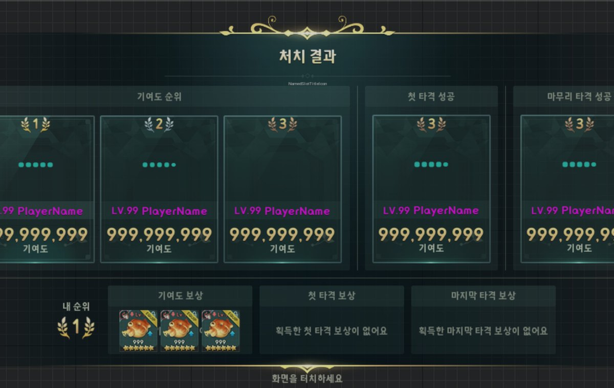
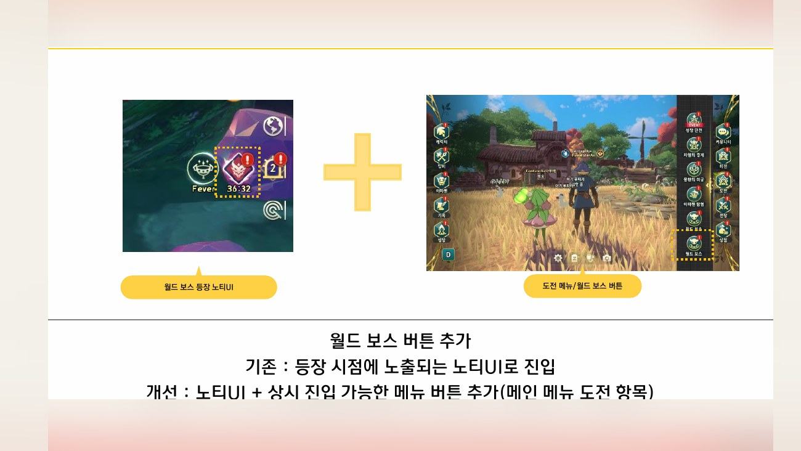
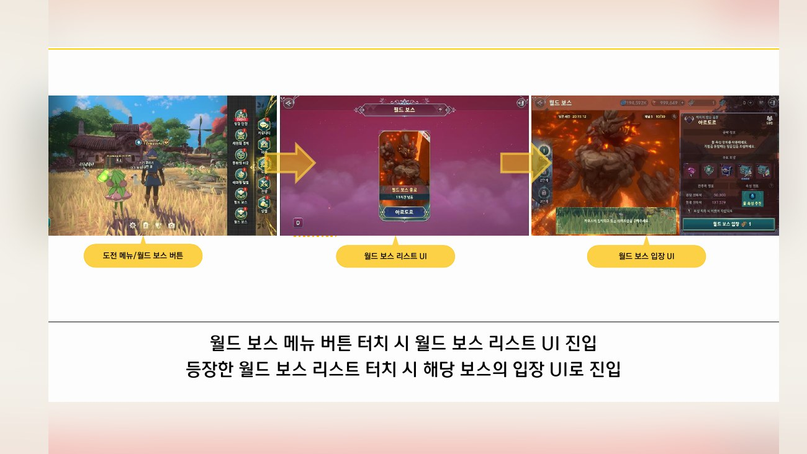
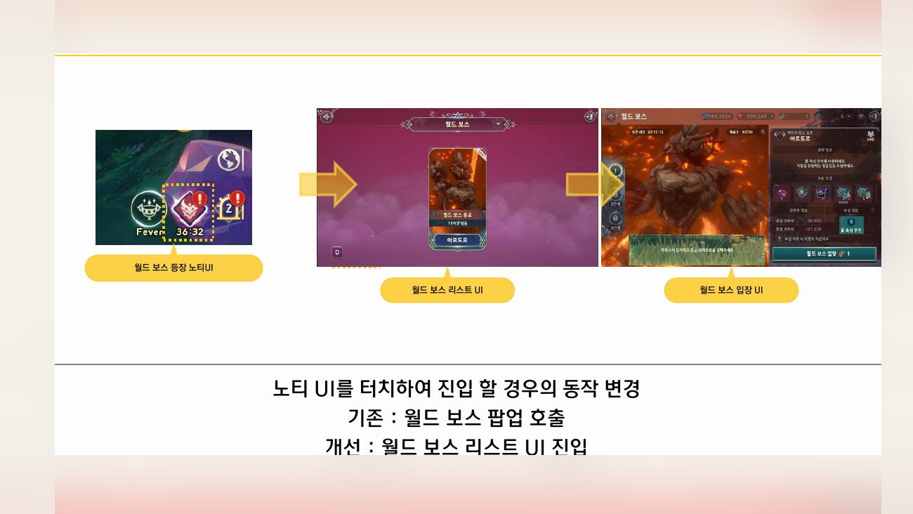
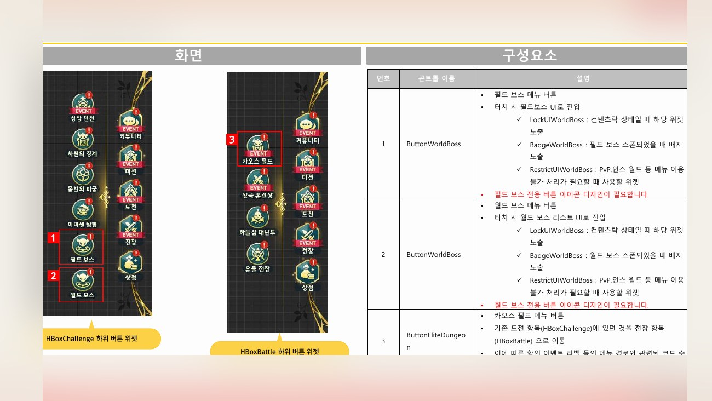
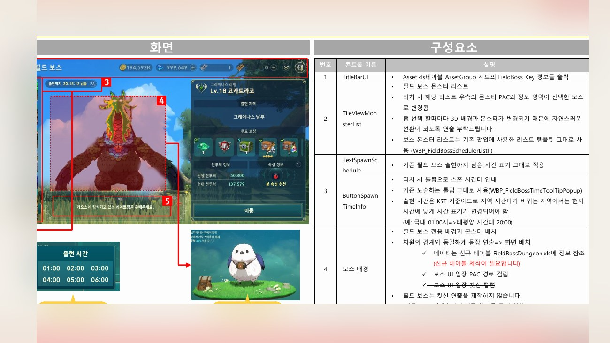
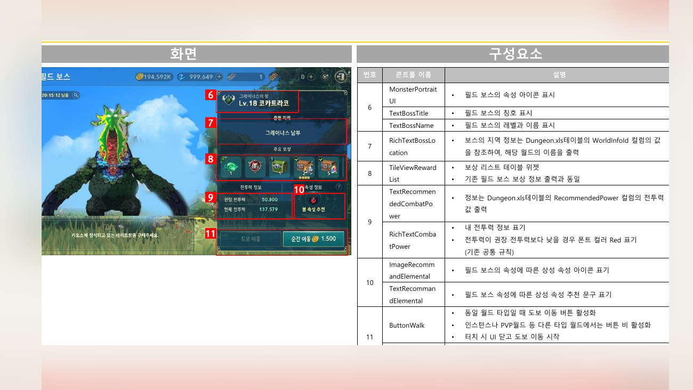

Planning Context
어떤 기획이었나
- 필드/월드 보스는 출현 상태, 권장 전투력, 보상 확인, 채널/파티 이동이 빠르게 연결되어야 하는 콘텐츠입니다.
- 정보가 흩어지면 유저가 보스 상태와 참여 가능 여부를 판단하기 어렵습니다.
ProjectN · Boss Content UX
필드/월드 보스 콘텐츠의 현황판, 보상 팝업, 권장 전투력, 채널 이동 편의 등을 정리한 콘텐츠 UX 개선 사례입니다.

Planning Context
Process
Deliverables
Result
보스 콘텐츠의 참여 판단, 전투 결과, 보상 확인, 이동 편의를 하나의 콘텐츠 UX 흐름으로 정리했습니다.
Deliverable Captures
원본 문서는 포함하지 않고, 포트폴리오 확인용으로 일부 페이지만 이미지화했습니다. 슬라이드 마스터/상하단 영역은 흐림 처리했습니다.





